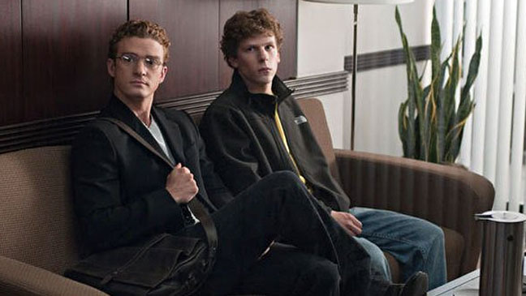

The trailer for David Fincher's The Social Network, created by Mark Woollen & Associates, won the Grand Key Art award in the audio visual category at the 40th Annual Hollywood Reporter Key Art Awards on Wednesday night at the Cinerama Dome. It was the only project to win the top prize. The trailer also earned gold awards for editing and music. A record-breaking 2,558 entries were judged for this year's Key Art judge panels. The Key Art Awards are Hollywood's most recognized awards competition for advertising and communications.
